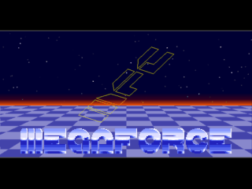
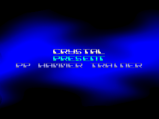
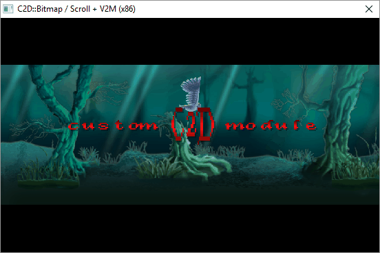
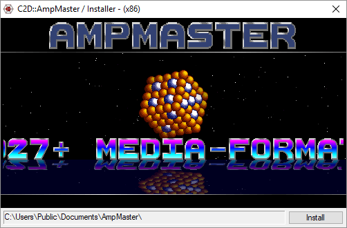
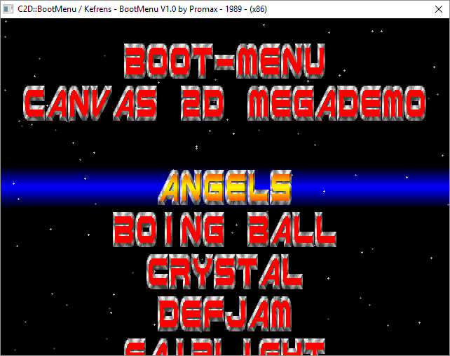

Kurzinformation zu Canvas2D (C2D)C2D ist ein Module für Purebasic welches bereits vor einiger Zeit für den privaten Bedarf entstand, seither dauerhaft im ß-Status vorliegt und diesen wohl niemals verlassen will. Ursprüngliche Idee war für eine frühe Version der AmpMaster_x86.dll einen Info-Requester mit typischen Oldskool-Effekt zu versehen, jedoch ohne Screen, Sprites, DirectX, GL etc., naja, wie es sich so ergibt entsteht gleich ein eigenes Konzept und der Requester ist nach wie vor... unverändert. C2D ist also ein OpenSource Module für Purebasic welches bei Interesse die Möglichkeit bietet in einem CanvasGadget 2D Grafik-Effekte darzustellen.
  Nun denn, Purebasic inkludiert alle deklarierten Proceduren eines Module standardmäßig während dem kompilieren unabhängig deren Verwendung. Dieses könnte zu übergroßen Ausgaben führen aufgrund vom im Programmablauf nicht verwendeter Funktionen. Um eine kompilierte Datei*.exe dennoch mit C2D kleinstmöglich zu erstellen, können auf fast einfache Weise jeweilige C2D-Effekte über Compiler-Anweisungen einzeln aktiviert werden. Hierzu sind diese über #Konstanten-Definitionen ( Jedes C2D Programm beginnt daher mit einem zu erstellenden IsC2D Module indem jeweiliger Befehlssatz über #Konstanten-Definition aktiviert wird welcher im Programm dann auch nur eingebunden ist. Sollte beispielsweise nur eine Animation mit Musik abgespielt werden, wäre folgendes IsC2D Module zu deklarieren: ; *** Schaltzentrale für C2D *** DeclareModule IsC2D XIncludeFile "..\Include\C2D_Types.pbi" #IsC2D_Anim = 1 #IsC2D_Music = #XMU_SCA XIncludeFile "..\Include\C2D_Defaults.pbi" EndDeclareModule XIncludeFile "..\Include\C2D_Module.pbi" ; *** Dein Programm startet ab hier... *** Zu beachten sind die jeweils innerhalb des IsC2D Module eingefügten Dateien Das zu erstellende IsC2D Module ist somit als eine "Schaltzentrale" für ein optimiertes C2D Module zu betrachten. Erst nach dieser Programmanweisung ist das Programm-Module Zugegeben, die Vorgehensweise ist etwas gewöhnungsbedürftig, aber es funktioniert wenn man sich irgendwie daran gewöhnt hat. 🍻  Natürlich sind aufgrund der systemnahen Kompatibilität eines CanvasGadget die Möglichkeiten recht überschaubar, da alleine schon über die Anzahl und mit der Dimension von angezeigten Bitmap-Bildern die Ablaufgeschwindigkeit drastisch sinkt und es hierdurch zu Ausreißern trotz zeitgesteuerten Programmablauf führt. Um dieses zu verringern können zeitkritische Darstellungen direkt in den jeweiligen Grafikspeichern des Canvas und einer Bitmap ausgeführt werden. Zum Beispiel ist ein direktes löschen des Grafikspeichers mittels#IsC2D_Clear = 2 um den Faktor ~10 zeitsparender als ein übliches verwenden des nativen Befehl Box(x, y, w, h). Ein anschauliches Beispiel bietet die Funktion C2D::BitmapScroll() welche hier erklärt wird bzw. das links im Bild dargestellte Beispiel unter \Examples\C2D_Bitmap_Scroll.pb.
Weitere erhebliche Geschwindigkeitseinbußen würden durch ein wiederholtes strecken / stauchen mittels Anmerkung: Floats für Alpha reduziert die Darstellungsgeschwindigkeit erheblich!  Um eine Vielzahl an Musikformate zu unterstützen, kann über die Anweisung#IsC2D_Music = #C2D_MUSIC_(Format) das abzuspielende Format definiert werden.
Die AmpMaster_x86.dll wird ebenfalls unterstützt da sie 944+ Extensionen erkennt und selbst exotische Musikdateien über WinAMP Plugins im original und überaus guter Qualität abspielt. Es können dann jedoch keine Musikdateien in die ausführbare *.exe Datei eingebunden werden und das Abspielen ist nur auf Windows x86 möglich. Natürlich müsste auch noch eine Erweiterung installiert werden.
Diesbezüglich befindet sich im Ordner \Tools\AmpInstaller\ das Programm AmpMaster_x86.exe mit welchem auf einfache weise eine Online-Installation in den öffentlichen Ordner C:\Users\Public\Documents\AmpMaster\ durchgeführt werden kann. Es werden keine Registry-Änderungen vorgenommen, weshalb das Ganze manuell jederzeit und restlos löschbar ist. Übrigens zeigt der Installer andeutungsweise den ursprünglich Sinn von C2D. Einige Beispiele verwenden dieses Verfahren, weshalb eine Installation durchaus empfehlenswert ist. Da der Source zu Canvas2D seit einiger Zeit völlig sinnfrei auf der Festplatte dahin-rostete, wurde er an Purebasic v5.62 UTF-8 angepasst und als OpenSource bereitgestellt. Eventuell findet jemand ein paar Zeilen daraus als nutzbar, wenn nicht, dann eventuell jemand anderes 😃  Wer jetzt noch immer Interesse hat, schaue sich die Beispiele im Ordner Examples\ an, dort werden jeweilige Befehle praktisch erläutert (naja, die meisten).Und bitte nicht vergessen, der Source wurde aus Gründen der Geschwindigkeit teilweise so strapazierend um-optimiert, daß er deutlich unübersichtlich wirkt (was tatsächlich zutrifft) und vor allem, es handelt sich um die Darstellung in einem CanvasGadet, daher sollte der Debugger in der Testphase nach Möglichkeit ausgeschaltet bleiben. Ist der Programmablauf dennoch zu langsam, kann über die Konstante Empfehlung: Starte doch mal die Batch-Datei - MegaDemo_x86.bat - Menü-Auswahl über das Mausrad und linker Mausknopf. Die Demo-Beispiele sind übrigens nicht identisch zu den Originalen, wer will kann dieses entsprechend anpassen. Eigentlich war es das, nichts was wirklich von Besonderheit wäre, hatte aber gerade Zeit zum tippen übrig. Wichtig aber wäre noch zu erwähnen, daß leider einige AntiVir Programme übertrieben empfindlich auf kompilierte Purebasic Programme reagieren. AntiViren-Tools verhalten sich zumindest etwas beruhigter wenn eine Kompilierung in einem Ordner mit Ausnahmeregel erstellt wird. Es ist also nicht zwingend ein Problem welches durch C2D verursacht wird, vielmehr die Pauschal-Heuristik dieser Schädlingsbekämpfer! Peace^TST, 14.12.2018 15:58 |